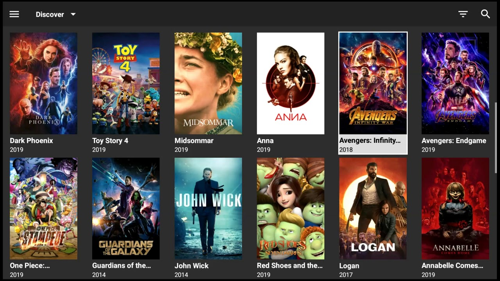
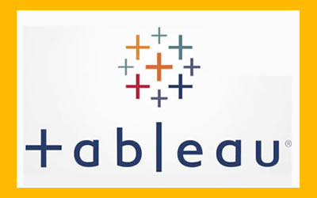

This project was a part of the Google Data Analytics Certificate Capstone project.
The main goal of this project was to draw insights and trends from BellaBeat users
(smart watch company) to improve its products. We followed the six-step analysis process:
Ask, Prepare, Process, Analyze, Share, and Act. This project was completed using R and Tidyverse library.
Enjoy!
Nashville housing dataset

In this project we cleaned and explored a Nashville housing dataset from Kaggle using SQL.
The dataset documents the housing market in Nashville in particular the value and selling price
of a house. The purpose of this project was to clean our data in order to perform our data
exploration and analysis. Enjoy!

As the covid vaccine is being distributed worldwide, I wanted to visualize how well countries are doing in getting their citizens
vaccinated. I used SQL to clean, explore and analyze the data and then used Tableau to create a dashboard to get a holistic view
of the vaccine rollout by country. Enjoy!
As the covid vaccine is being distributed worldwide, I wanted to visualize how well countries are doing in getting their citizens
vaccinated. I used SQL to clean, explore and analyze the data and then used Tableau to create a dashboard to get a holistic view
of the vaccine rollout by country. Enjoy!

In this project we performed a correlation analysis on a movie listings using Python and Jupyter. The purpose of this project
was to do a deep analysis on what are the main contributing
factors to gross income of a movie. Enjoy!
This was a mini project as part of the Google Data Analytics course. We used R Studio to explore
and manipulate a hotel booking dataset and get some insights on which hotels make the highest number of bookings.

Tableau Dashboards for projects on some personal mini projects.